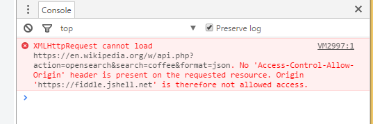

In the previous chapter, you saw a new term JSONP. From the name, we can guess that it has something to do with JSON. JSONP's full name is JSON with Padding. It is a technique that help web developers bypass the Cross-Origin Resource Sharing (CORS) restrictions.
CORS is a proposed Internet standard for allowing/disallowing web browsers to request data across domains. To simplify it, the communications between your browser and another application are subject to restrictions if they are not hosted on the same server. JSONP is your easy way out. In this chapter, we will explain how JSONP works and why it's critical for accessing data.
Here is a pretty simple JSONP example adapted from Jason Schock's article.
There is no other JavaScript code used. All magic is done through the <script> tags in HTML.
processJSON() is a regular JavaScript function. It takes some data, logs it to the console and also converts and outputs it into the HTML. document.getElementById("output").textContent updates the text in the <div> block. If you don't remember how JSON.stringify() works, review the JSON chapter again.
Another piece worth attention is jsoncallback=processJSON in the script URL. This parameter is super important. It says "pass the JSON response padded inside of the processJson() function as an argument!" See the result below.
processJSON( {...} ) receives the entire JSON response as an argument and executes the way we defined it.
You may wonder why we need to do so. The reason is CORS. If we send the request plainly without using JSONP, we will get into a little trouble. Here is the almost same code as in the previous chapter. The only change is in the dataType property.
If we send the request plainly without using JSONP, no result is coming back. As a matter of fact, the response was received, but our browser cannot process it.
One of the restrictions defined by CORS is to have the "Access-Control-Allow-Origin" header in the response. However, this is not provided by the server. No matter what we do, we cannot change the behavior of a server, so we cannot just modify the response.
Here is how JSONP does the magic. jQuery provides JSONP as a method and handles the hassle behind the scene.
We've seen GET requests. Wikipedia actually allows both GET and POST methods on many endpoints. The way things are done are not so different for the POST method. Can you use what you have learned above to fix the code here? Right now, there's a CORS error that is preventing us getting the response correctly.
There's another small trick in the parameters that would change the number of items received back. Make sure you update that as well. If you need more reference, please read it on the Wikipedia API documentation for "opensearch" action.
The corrected code should produce result below:
© Shuang Carol Jin. All rights reserved. | CSS based on TEMPLATED.